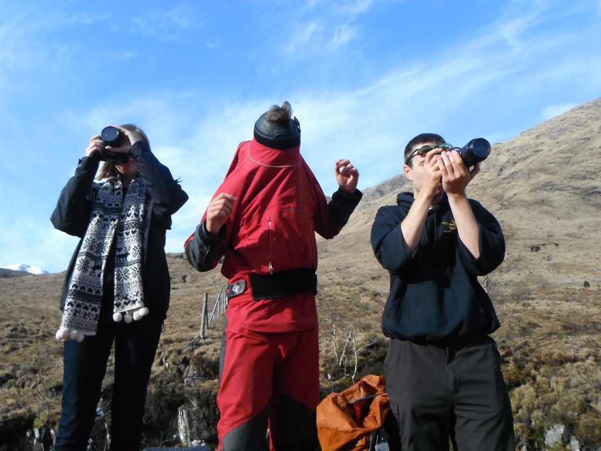
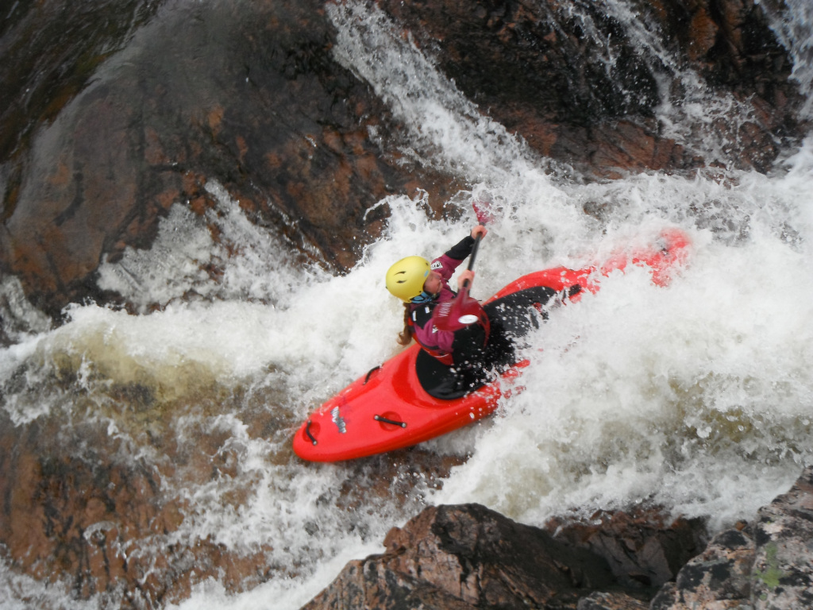
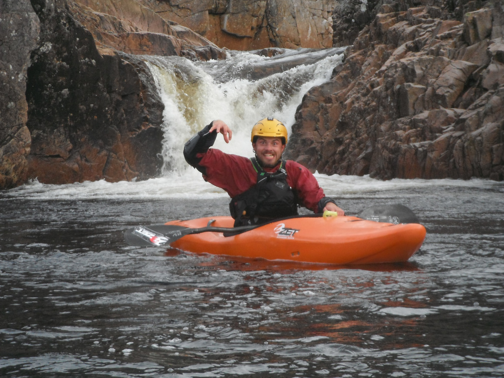

Well we all knew this days was coming, the final day of kayaking in Scotland. Having know this was coming we had planned an epic day of kayaking, all starting with the earliest alarm of the week at 7am, ready to hit the road at 8am with the satnav's aimed at Glen Etive
The reason for this early start would all soon before clear, that being the longest and hardest walk in that I have ever undertaken, which make the walk in on the Garry seem small in comparison. This river is a tributary to the River Etive, the Allt a' Chaorainn, This river as described by richard "is gravity feed, water is only required for lubrication", and I can't say he isn't wrong. With the early start and the long hike, when we were stood in the middle of nowhere at 10am, ready to hit the water I was hoping he was right.

For the 5 off use who took our boats along for the long hike the effort easily justified, taking us down huge rock slides, narrow slots while testing our ability to dodge rocks. As we went down the river we were accompanied by Rhiannon, Ian and Emma who had been entrusted with the cameras, so hopefully the photos should appear over the next few days of the trip.
After arriving at the bottom of the river we packed the boats into the back of richards Van, and prepared to head off to do what everyone had been waiting for, the Etive. For many people including myself this was the opportunity to run some of the biggest drops we have ever done, as well as get some new Facebook profile pictures. We started of at tripple falls (which was much more impressive than the other tripple falls I had done on the Dart Loop!), watching richard to a run first to give use who had never done it before an idea off the line.

We then set up safety, and the first guys and girls where off with Rhiannon following Richard down, she made it successfully down the first drop, only to go over at the bottom. Following a failed attempt at rolling, then taking a swim beween the first and second drop. She was then followed by Polina, who powered down both the first and second drop successfully and even survived a few iffy moments in the eddy bellow the drop. Bob, followed the girls down, making a point of saying hello to Mike on the way down although we don't think it was intentional! With the 4 off them back in the boats they made there way down the final drop with Polina taking a swim at the bottom. Myself and Zoe, then joined richard to a quick run from top to bottom, with Richards only run to be caught on camera he messed up. Not to mention Zoe needing Richards Help after ending up against the wall at the bottom of the 3rd drop.

At the bottom, most people pilled into the cars and headed off to right angle falls, with Richard, Zoe, Bob and myself paddling down the river to meet them, while Mike headed down with his camera kit to capture the action as we paddled down. With both me and Bob having never paddled the river we were relying on Richard's and Zoe's memory, Richard took the lead, for another amazing section of river. With each feature known not my its name but by who ran it, and who/what got broken there when the university group paddled it last year. The quick pace off the run made it really enjoyable, with quick inspections off the features, and the small number of us allowing for a quick run of the river. The run was uneventful, apart from Zoe's swim at letter box, for which richard wins the award of most useless throw line for (all will be explained when the video appears).
We were soon down at Right Angle Falls, and ready to do the biggest waterfall that many off us had ever done. The girls who had done tripple falls took the option for Richard to launch them from directly above the drop, both completing it successfully, albeit with a bit of swimming after. The time came for my run, and I seemed to go for the option off keep paddling and then air brace (something I seem to have a habit of), disappearing underwater for sometime, but resurfacing upright, meaning I managed to stay upright for the whole trip, without the need for a single roll!
During the time we were are Right Angle Falls every single weather Scotland could trow at us had come though; Sun, Rain, Wind, Hail and Snow, but Nothing seemed to be able to wipe the smile of peoples faces, it was a great way to end the weeks paddling, now time to pack up ready for most people to hit the road home tomorrow, while I'll be off Mountain Biking.